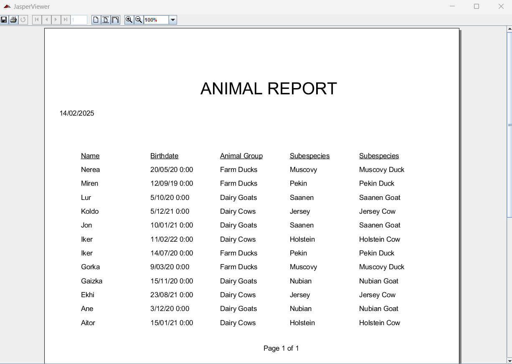

Esta ventana muestra, para un administrador dado, una lista en formato tabla con los animales registrados. La ventana permite realizar operaciones de consulta, registro, edición y borrado de animales. La interfaz incluye un menú de navegación, sección de búsqueda y un área de visualización principal con una tabla de datos.
Para crear un animal deberá pulsar el botón Add. Si no se produce ningún error, se creará el usuario y aparecerá en la tabla de animales que se muestra en la ventana.
Modificar datos de animalesPara modificar los datos de un animal deberá seleccionar el valor que desee editar.
En los casos de Name y Subespecies, deberá hacer doble click e introducir el nuevo valor.
En los casos de Birthdate, contará con un calendario en el que deberá seleccionar el valor que desee, alternativamente podrá introducirla manualmente.
En los casos de Animal Group y Species, contará con un control de selección, donde deberá escoger una de las opciones disponibles.
Si no se produce ningún error, se modificarán los datos deseados y aparecerán en la tabla.
Para eliminar animales deberá hacer la selección haciendo click en fila deseada de la tabla de animales. Si desea eliminar más de un registro de manera simultánea, podrá seleccionar múltiples líneas manteniendo la tecla "ctrl" pulsada. A continuación, pulse en el botón A continuación, deberá hacer click derecho sobre la tabla y seleccionar la opción Delete, y se le solicitará confirmación para eliminar los registros. Si confirma el borrado y no se produce ningún error se eliminarán los animales y se actualizará la tabla que se muestra en la ventana.
Pulsando el botón Print se abrirá una ventana donde puede ver un documento
que contiene un listado de los animales que existen en la aplicación:

Mediante los botones de la parte superior de la ventana podrá imprimir o almacenar dicho informe.
Pulsando el botón Help verá este documento de ayuda.